As part of the CHI Student Design Competition 2017, we created ARIA - a device and video player combination that aims to help self-learning guitarists learn faster from online tutorial on YouTube. The control device is placed on a guitar and allows the student to control the video player and thus decrease the learning time and make the lesson much more pleasant.
With the spread of online communities, self-learning has become ubiquitous. Though much work has been done to help beginner learners, we identified Mid-level guitarist learners as a group that finds scarce learning resources and tools. The online materials are inconsistent and not personalizable. In addition, the time required to laern on their own, as opposed to having formal education can be significantly longer and could lead to students losing motivation or giving up.
In order to understand the problem better, and to assess existing solutions, we conducted competitive analysis:
| Title | Details |
|---|---|
| YouTube video tutorials |
|
| Rock Band and Guitar Hero |
|
| Self-learning systems |
|
| Chordify |
|
The report that I was responsible for was about the frozen dessert industry. The reports gave us insights into trends in the industry. We wanted to get a good understanding of the relevant factors that might affect Iorios' performance.
We interviewed 7 guitar players who had self-learnt for 3 months to 8 years. Our interviewees had the following characteristics:
Based on our interviews, we constructed user personas
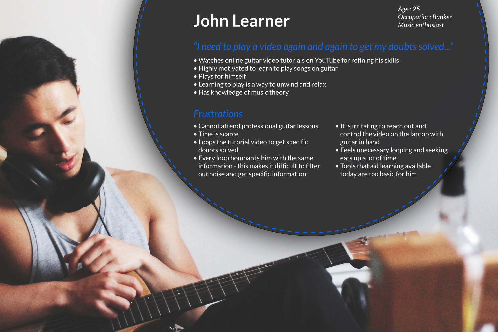In order to design improve our ideas, we conducted a participatory design exercise with 3 mid-level guitar learners.
We asked the users to try to learn a new song using YouTube. We gave them sticky notes and told them they could imagine a device or an interface that can control the video and do what they need from the lesson. We also asked them to place the sticky note at the place they deemed best fit.
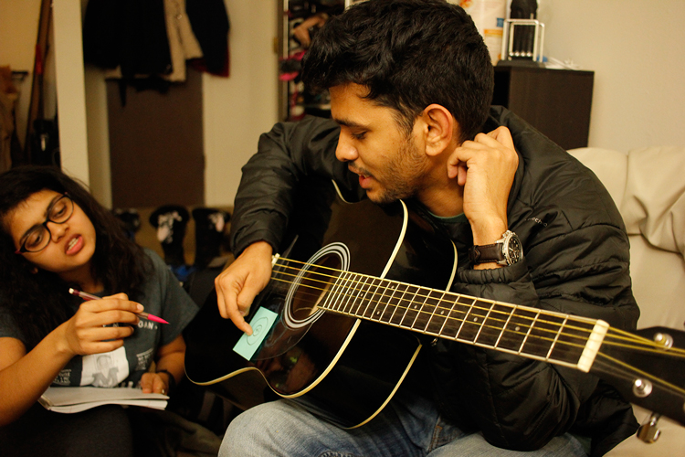 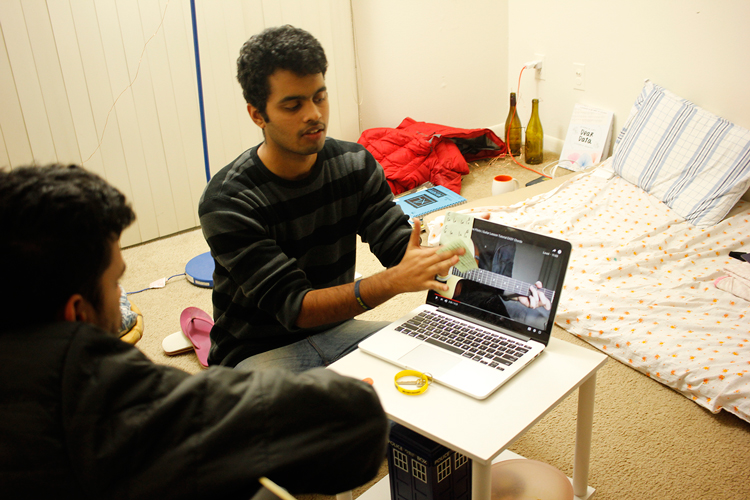 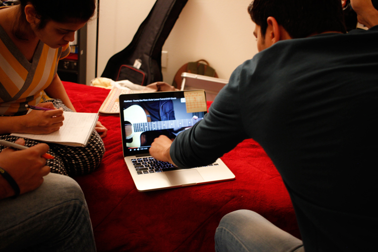In order to synthesize our finding and further extract data from our interviews and participatory design exercises, we constructed an affinity diagram.
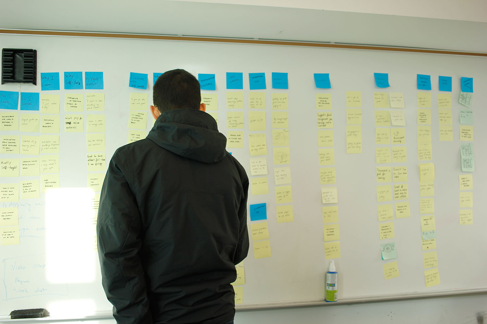Our finding were the following:
We then brainstormed various solutions composed of diverse interfaces and mediums.
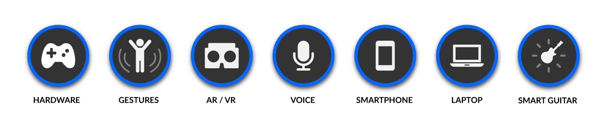Our research showed that a hardware controller, capable of allowing a learner to interact with the video content could be viable solution to the problem.
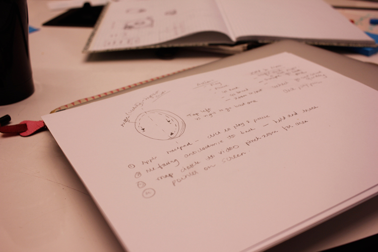 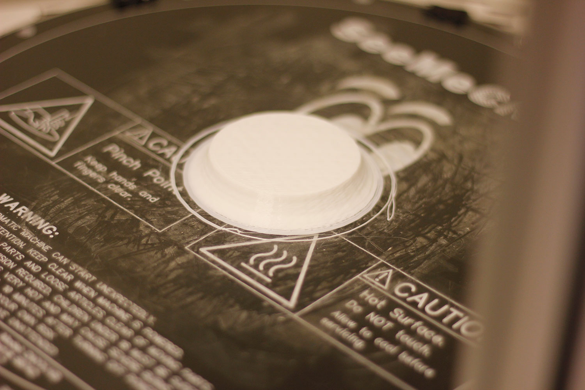 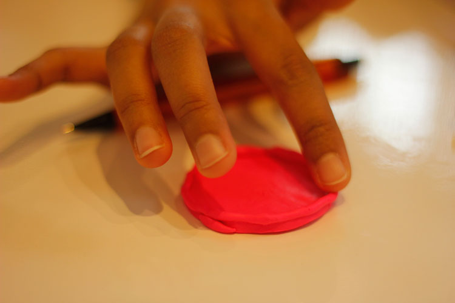 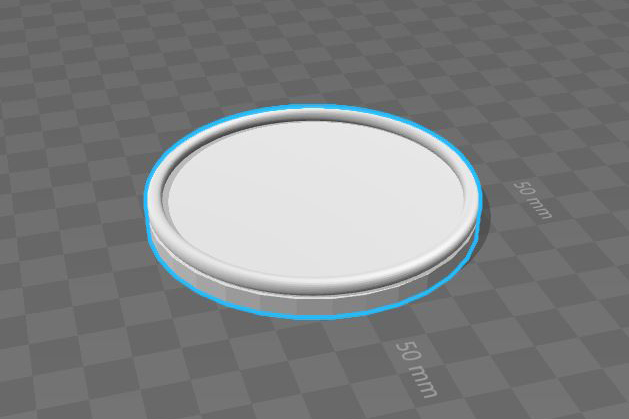Our final design strived to incorporate various functions to solve the problems of mid level self-taught guitar learners
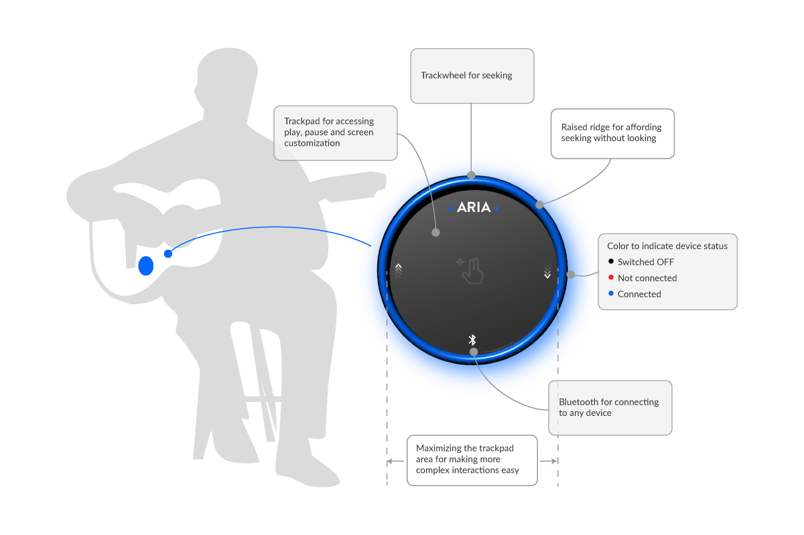In order for the device to be able to manipulate the video content, a video player needed to be designed. Our interviews showed that learners typically use a desktop when trying to learn a guitar.
We prototyped a video player that allows for a customizable and personal lesson.
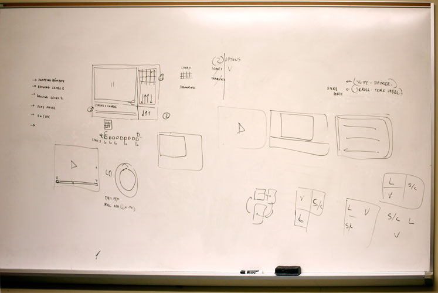 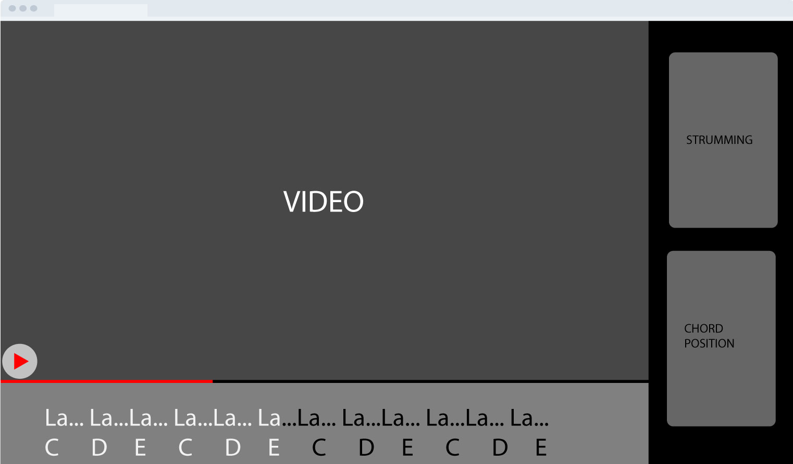The video player was designed to allow learners to bring different content on and off the screen on-demand. This was aimed to enable users to customize their lesson to fit their needs.
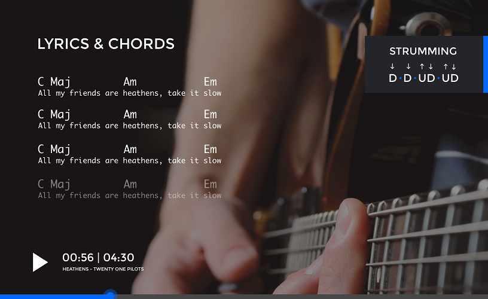The below interactions with the device allowed learners to do the following with the video content: